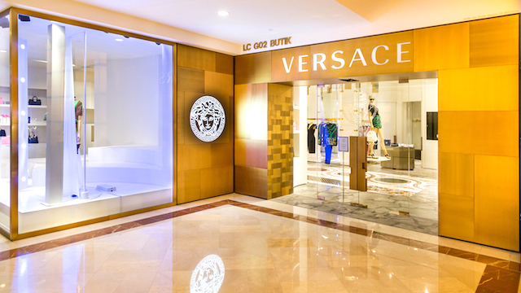
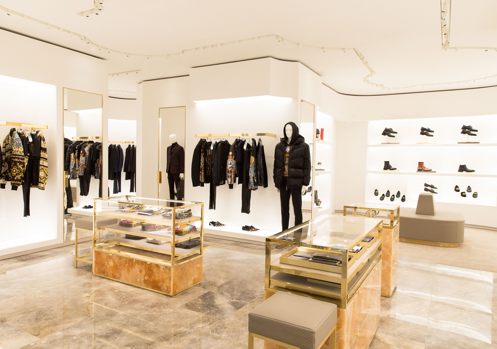

VERSACE
The Versace brand is known for its innovative designs having symbolic flashy prints and bright colors but with style. The company announced in 2018 that it would stop using fur in its collections.Versace designed throughout the 1980s and '90s and built a fashion empire by producing ensembles that oozed sensuality and sexuality. His most famous designs included sophisticated bondage gear, polyvinyl chloride baby-doll dresses, and silver-mesh togas. Versace's detractors considered his flashy designs vulgar.
